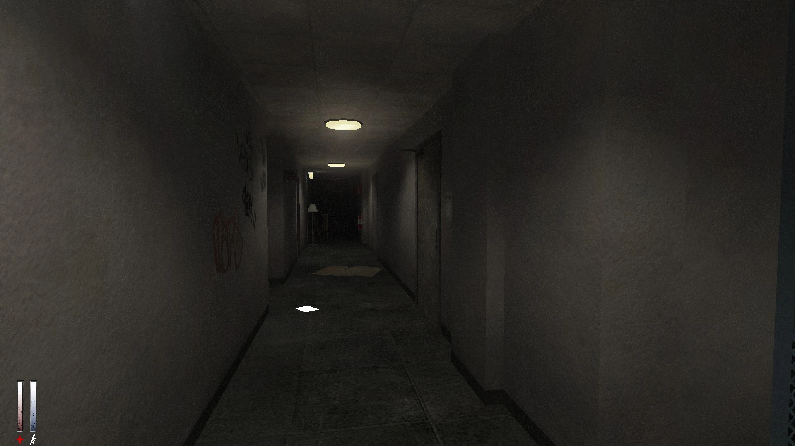
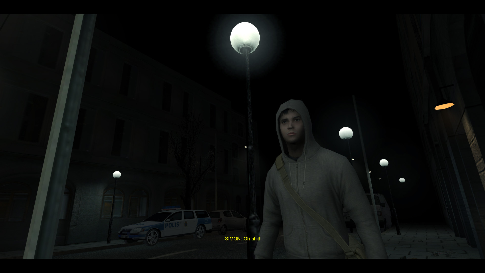

The apartments
Gli appartamenti sono la prima ambientazione del videogioco, oltre ad essere la dimora del nostro protagonista Simon!

Qui si possono incontrare i primi nemici del gioco, ad esempio gli Slower o i Faster
The sewers
Le fogne sono un'ambientazione ricorrente nel gioco, e si incontrano per la prima volta dopo la prima boss fight con il Sawrunner
- In questa ambientazione vengono introdotti per la prima volta i Sewmo, dei nemici ricorrenti nel gioco.
- Nelle fogne avviene il primo incontro con il dottor Purnell, lo psicologo di Simon
- E ricorda... Attento alla seconda boss fight !!!
Per imparare i vari nemici di cry of fear puoi visitare il sito:
Cry of fear enemies
Stoccolma
Durante il gioco ci sono altre ambientazioni presenti e cruciali per la storia del gioco tra cui:
Gli appartamenti in cui si incontra per la prima volta Sophie, la ragazza amata da Simon, e in cui è presente la boss fight con carcass
I due parchi e la scuola
La stazione dei treni
L'ospedale psichiatrico abbandonato in cui c'è il primo ma anche l'ultimo confronto con il dottor Purnell
